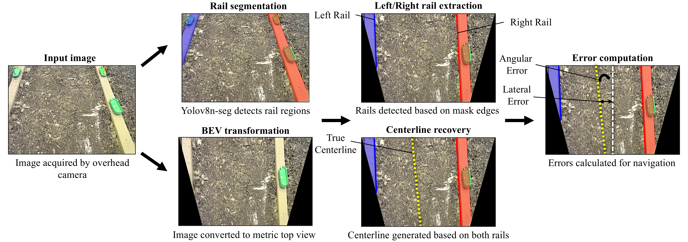
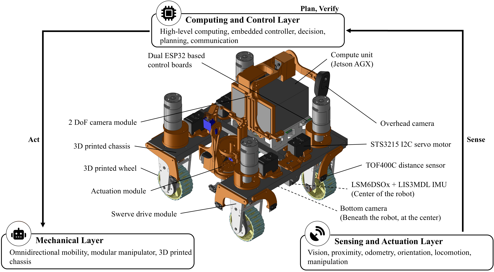

Vision-based navigation
RailNav projects segmented row rails into a bird’s-eye view (BEV) to estimate centerline and heading errors for swerve-drive correction.

MISSISSIPPI STATE UNIVERSITY
Department of Agricultural and Biological Engineering
Mississippi State University
Agricultural production faces persistent labor shortages and increasing demand for automation, yet progress in agricultural robotics remains constrained by the limited availability of affordable, flexible, and accessible research platforms. This paper presents Argus Omnimotus, an open-source, modular, low-cost agricultural robotics platform designed for autonomy research and hands-on education. The platform integrates four-wheel independent swerve drive, swappable computing, distributed embedded control, multimodal sensing, and configurable manipulation within a unified sense-plan-act-verify framework supporting perception, control, navigation, manipulation, and autonomous task verification. The platform was evaluated through representative row-crop navigation and manipulation tasks under varying lighting and soil conditions. Experiments demonstrated reliable lane following, autonomous row-to-row navigation, target identification, seed dispensing, plant manipulation, and closed-loop verification of task success. Its modular architecture allows individual autonomy components to be independently tested, modified, and validated for rapid prototyping and experimentation. Controller-tuning studies and integrated testbed trials further demonstrate its use for teaching robotics, embedded systems, computer vision, and autonomous decision-making. By combining affordability, modularity, open-source accessibility, and end-to-end autonomy, Argus Omnimotus provides a practical platform for agricultural robotics research, technology development, and workforce training.

Independent swerve mobility. Four drive and four steering axes enable sideways motion, simultaneous position and heading correction, and software-selectable skid-steer operation.
Modular, accessible hardware. A 3D-printed chassis, swappable computer, and configurable mounts support adaptation. The platform costs approximately $680, excluding the high-level computer.
Integrated sensing and control. Two cameras, seven range sensors, and motion feedback work with a Jetson AGX Orin and two ESP32 controllers.
Manipulation with verification. A 3-DOF hybrid arm supports plant-surrogate toppling and seed-surrogate dispensing, with feedback to check task outcomes.
A complete research and teaching platform. The sense–plan–act–verify framework connects row navigation, target detection, action, and verification while allowing subsystems to be tested and modified independently.
If you use or build on Argus Omnimotus, please cite our work and credit the project.
@unpublished{islam2026argus,
title = {{Argus Omnimotus}: An Open-Source Modular Swerve-Drive
Robot Platform for Agricultural Robotics Research
and Education},
author = {Islam, Moeen Ul and Adhikari, Bishal and
Thomasson, J. Alex and Chen, Dong},
year = {2026},
note = {Unpublished manuscript, Mississippi State University}
}